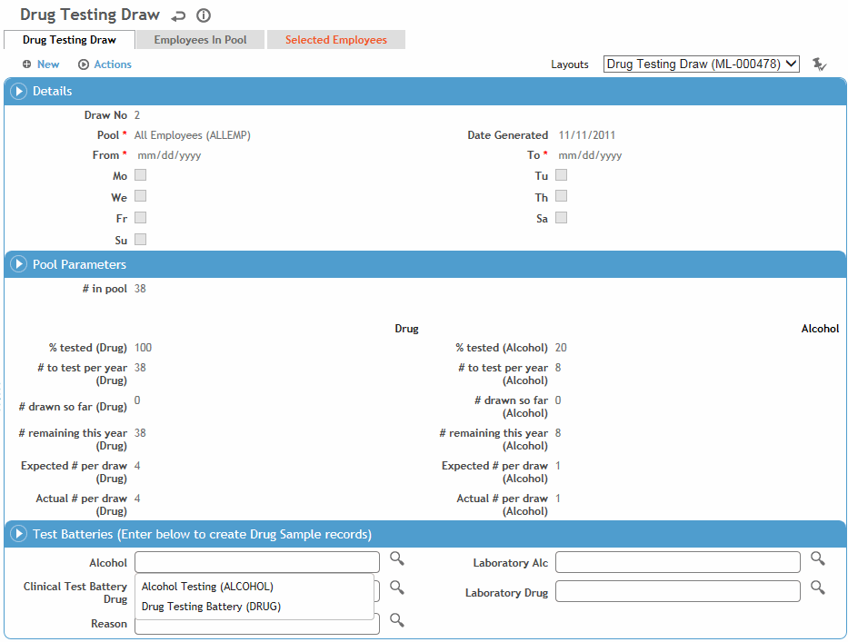

Cority selects employees for testing from employee pools based on the parameters you enter.
An Alcohol Only checkbox may be added to custom layouts to allow you to draw employees for alcohol tests only.
In the Occupational Health menu, click Drug Draws.
Use the provided fields to generate a list of existing draws and select a draw from this list, or click New to start a new draw.

Select the Pool type and enter the date range for testing and the possible days of the week on which testing can occur.
In the Actual # per draw fields, enter the number of employees to be tested for drugs and for alcohol.
Select the Reason for testing (this is in the Test Batteries section for Random draws, and the Test Reason section for Forced Selection draws).
If you are doing a Forced Selection draw:
The Weighted Pool Size displays the average pool size over the past nine months.
The Stewardship and Selection Requirements, Collection Parameters, Draw Metrics and Stewardship Status sections display metrics for the selection calculations; for a description of these fields, see Forced Selection Draw Metrics.
If you are planning to create Sample records, select the test batteries and laboratory to be used.
Cority compares the GDDLOFB
values linked to the selected Pool code to the GDDLOFB values in the
Demographics module for all employees, and displays all matching employees
on the Employees In Pool tab. This list is saved as a static list
when the drug draw is saved.
To print this list, choose Actions»Print Employees
in Pool Report.
To make a random selection of the employees in the pool, choose Actions»Randomize, then save the draw when prompted. The selected employees are displayed on the Selected Employees tab, along with the date for testing, those designated for alcohol testing and the status. Employees can only be in one pool at a time. To print this list, choose Actions»Print Selected Employees Report.
The list of selected employees is not displayed until you click Save Draw.
To view a list of all employees selected in all drug draws, in the Occupational Health menu, click Drug Draw Details. For more information, see Viewing Drug Draw History for Employees.
To create sample records:
On the Selected Employees tab, click the name link for each employee and change their status to Collected.
On the Drug Testing Draw tab, choose Actions»Create Sample Records. Cority checks to see if there is already a drug and alcohol sample record linked to this Drug Draw ID for each of the selected employees.
If yes, another drug and alcohol sample record is not created for that employee.
If no, a new drug and alcohol sample record is created and stamped with the Drug Draw ID for each employee.